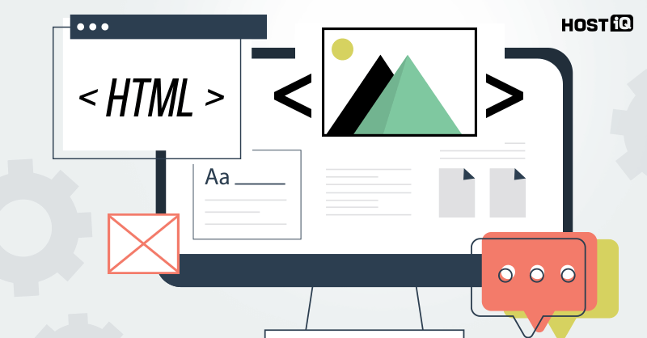

Перший крок при створенні сайту полягає у виборі, а саме робити його повністю з нуля самостійно чи скористатися конструкторами
розробка техгічного завдання
прототипування
Створення привабливої цільової сторінки є одним із найкращих способів переконатися, що ваш сайт отримує масу звернень, а компанії та клієнти справді перевіряють ваше портфоліо. Замість того, щоб використовувати систему керування вмістом, де рамки та дизайн теми визначено заздалегідь, ви можете скористатися конструктором сайтів для розробки веб-сайту свого портфоліо.
Замість використання безкоштовних фотографій, які рідко навіть мають сенс, використовуйте справжні фотографії, які представляють ваші послуги та вас, якщо це можливо
